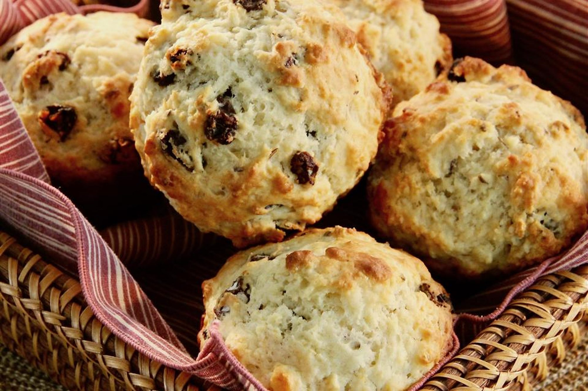

Irish Soda Bread Muffins

Description
One bowl, mix, bake for 20 minutes, and you have tasty muffins!
Ingredients
- 3 cups of all-purpose flour
- 1 cup raisins
- 1/2 cup white sugar
- 2 tablespoons white sugar
- 1 tablespoon caraway seeds
- 1 tablespoon baking powder
- 1 teaspoon salt
- 1/4 teaspoon baking soda
- 1 3/4 cups buttermilk
- 1 eggs
- 1/4 cup butter, melted
Steps
- One bowl, mix, bake for 20 minutes, and you have tasty muffins!
- Mix flour, raisins, 1/2 cup plus 2 tablespoons sugar, caraway seeds, baking powder, salt, and baking soda in a large bowl.
- Whisk buttermilk and egg together in a small bowl. Stir into flour mixture. Fold butter into the batter.
- Spoon batter into the prepared muffin tin.
- Bake in the preheated oven until a toothpick inserted into the center comes out clean, 20 to 30 minutes.